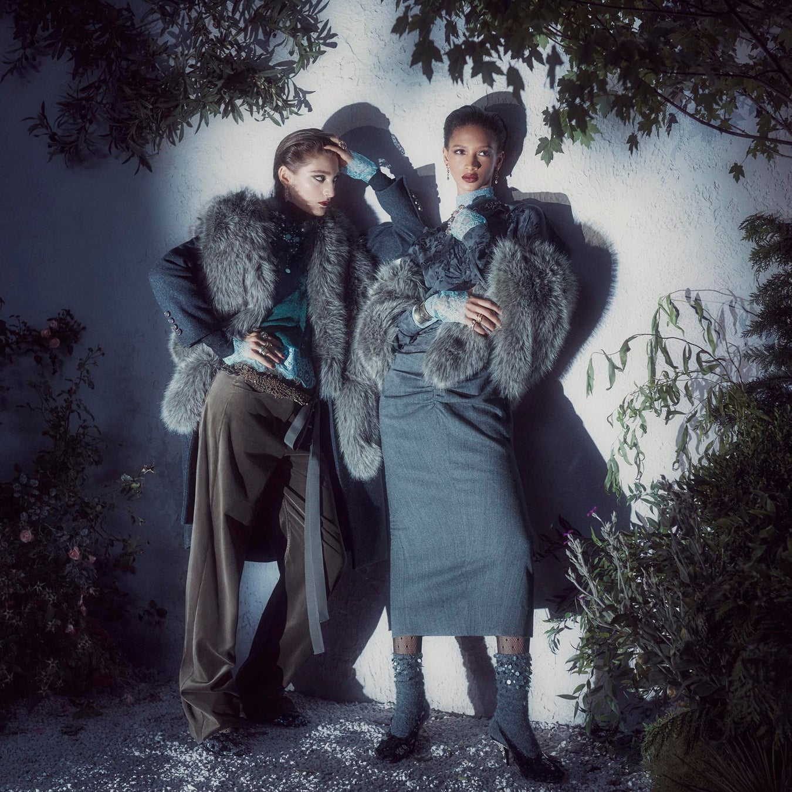
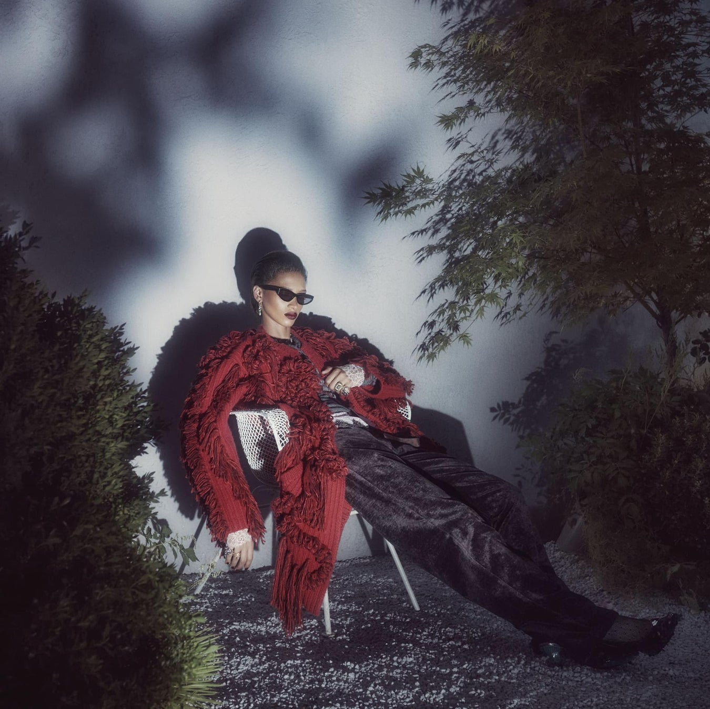

ZARA STUDIO 2026 秋冬女士系列的两张广告照片，呈现出一种相近的人物气质：服饰装饰丰富，人物却神情克制，与镜头保持距离。这种印象来自服装、身体姿态、视线与投影之间的配合。
品牌将女士系列命名为 Twilight Roses，由 Steven Meisel 摄影、Karl Templer 负责造型，配套短片由 Fabien Baron 执导。官方介绍强调，将蕾丝、亮片等装饰元素与针织、衬衫和长裤混合，打破日常服装与晚装之间的界限。¹ 以下以官方公开的双人站姿与单人坐姿照片为例，分析这种混合如何进入人物形象；关于气质与画面作用的解释，属于本文的视觉解读。
服装的华丽，怎样成为人物的状态

图 1：双人站姿。摄影：Steven Meisel；图源：ZARA／ITX Japan 官方发布资料。¹
双人照片中，毛绒质感的外搭、蕾丝领口与袖口、闪亮配饰集中在上半身；灰色裙装与棕色长裤则保留了较完整的色块。繁复细节没有平均铺满全身，人物轮廓仍然清楚。较亮的面部与蓝绿色袖口，也从深色衣物中显现出来。
两位模特都没有采用双手垂落的中性站姿。左侧模特一手抬至头部，另一手停在腰间；右侧模特的手分别靠近领口和腹部。这些动作让戒指、袖口、领口与毛绒外搭同时进入视线。手势承担了服饰展示，也组织了身体形态。
她们的肩线、头部朝向和手臂弯曲并不完全对称。左侧模特转头看向右侧，右侧模特的面部更接近正面。两个人站得很近，却没有统一转向镜头，也没有以笑容建立亲近感。人物因此显得自持，画面保留了一种关系尚未说清的状态。
这种气质不能只归因于衣服。如果换成并排正站、同时直视镜头和微笑，服饰仍然华丽，人物之间的关系与观看感受却会不同。姿态决定了服装是被端正展示，还是融入一个具体的人物状态。
身体舒展开，装饰仍然保持分量

图 2：单人坐姿。摄影：Steven Meisel；图源：ZARA／ITX Japan 官方发布资料。¹
坐姿照片采用了另一种身体安排。模特向后倚靠，双腿向画面右下方伸展；一只手垂落，另一只手停在胸前。身体不再沿竖直方向收拢，而是形成一条较长的斜线。
红色流苏外搭体积明显，纹理繁密，白色网状袖口与金属饰品进一步增加了细节。与之配合的却是舒展的坐姿和深色长裤。服装有隆重感，身体没有表现出同等程度的拘谨。这里可以看见官方所说的日常与晚装混合：装饰性穿着进入了一个相对随意的休息姿态。
但舒展不等于亲切。深色窄框眼镜遮挡了眼神，闭合的嘴唇与没有面向观众的视线减少了直接交流。身体放松，表情仍然收敛，两者共同形成了较有距离的形象。它也说明，“松弛”可以通过重心、肢体延伸和衣物垂落来表现，不必依赖微笑。
让投影参与构图
两张照片都把浅色墙面变成了承接影子的背景。双人照片中，头部、手臂和衣物的投影轮廓较清楚；坐姿照片里，人物身后也留下了鲜明的暗影。这些影子增强了身体与墙面之间的位置关系，让人物像是置身于一个可触及的空间。
人物附近较清晰的投影，与墙上较模糊、尺度更大的植物影子形成对照。画面边缘还有真实枝叶，使植物、人物和墙面分成不同层次。背景因此具有环境线索，同时保留了大片没有具体地点标识的区域。
这种空间处理为画面留下了想象余地：能看见人物所在环境的一部分，却无法仅凭照片确定她们正在经历什么。本文所说的“电影感”，主要指这种由人物状态、局部环境和明暗关系共同形成的情境感，并不表示照片讲述了一个已被证实的故事。
光线也使衣物呈现不同的表面效果：毛绒边缘显出细丝，金属与装饰细节形成局部亮点，深色长裤保留明暗变化。人物塑形和材质展示在同一张照片中完成。仅凭成片，无法确定现场灯具、布光数量或后期处理比例。
两张照片之间，怎样形成变化
将两张照片并置，最明显的差别是人物占据画面的方式。双人站姿接近竖直展开，身体与服装占据较大面积；单人坐姿沿斜线延伸，人物上方留下大片墙面与植物影子，空间感更强。
变化之外，浅色墙面、植物、鲜明投影和收敛的表情持续出现。共同元素使两张照片属于同一个视觉环境，人物数量、姿态和画面疏密则提供差异。系列的一致性不要求每张照片使用相同的姿势。
对人像拍摄而言，这两张照片提供了一个具体的练习方向：先确定人物要呈现的状态，再让手势、视线、重心与服装细节相互配合。拍摄时既检查脸部表情，也检查手放在哪里、衣物怎样垂落、影子是否挤压轮廓。换一张照片时，再通过取景和姿态改变节奏。人物气质由这些可调整的关系逐步建立。
参考资料
- ITX Japan，ZARA STUDIO 2026 秋冬系列官方发布资料，2026 年 10 月 23 日：系列介绍、制作署名及官方图片。本文选取其中两张女士广告静态照片分析，不涉及配套短片的镜头、声音或完整叙事。
留言
由 Disqus 提供。